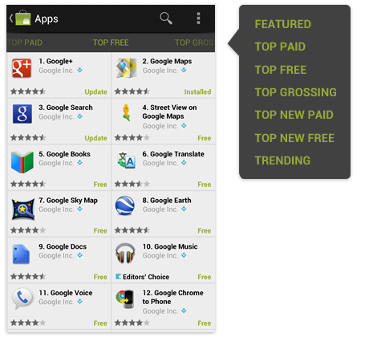
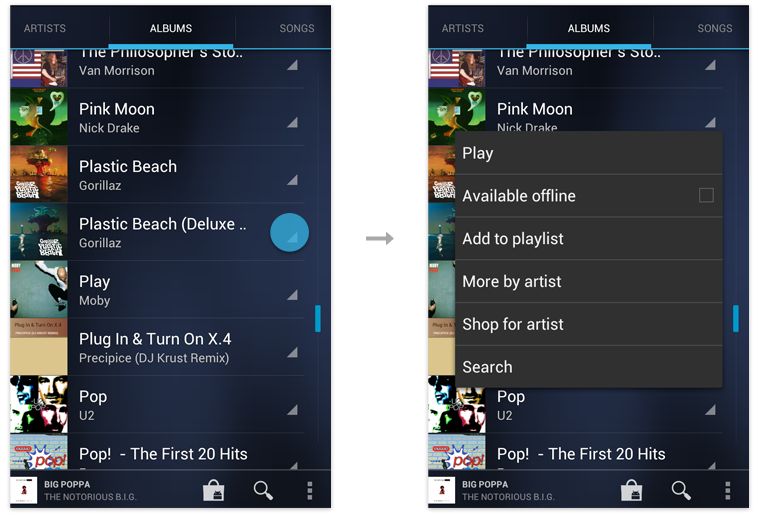
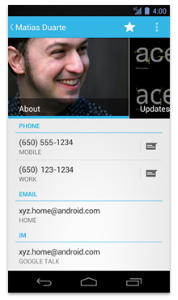
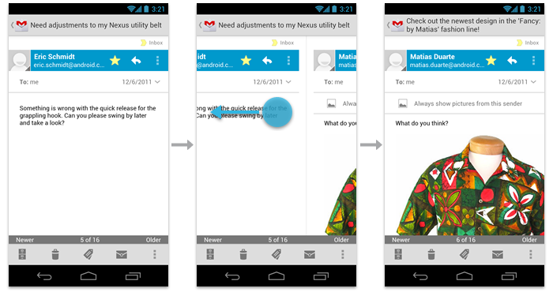

Apps come in many varieties that address very different needs. For example:
- Apps such as Calculator or Camera that are built around a single focused activity handled from a single screen
- Apps such as Phone whose main purpose is to switch between different activities without deeper navigation
- Apps such as Gmail or Market that combine a broad set of data views with deep navigation
Your app's structure depends largely on the content and tasks you want to surface for your users.
General Structure
A typical Android app consists of top level and detail/edit views. If the navigation hierarchy is deep and complex, category views connect top level and detail views.

Top level views
The top level of the app typically consists of the different views that your app supports. The views either show different representations of the same data or expose an altogether different functional facet of your app.
Category views
Category views allow you to drill deeper into your data.
Detail/edit view
The detail/edit view is where you consume or create data.
Top Level
The layout of your start screen requires special attention. This is the first screen people see after launching your app, so it should be an equally rewarding experience for new and frequent visitors alike.
Ask yourself: "What are my typical users most likely going to want to do in my app?", and structure your start screen experience accordingly.
Put content forward
Many apps focus on the content display. Avoid navigation-only screens and instead let people get to the meat of your app right away by making content the centerpiece of your start screen. Choose layouts that are visually engaging and appropriate for the data type and screen size.

Set up action bars for navigation and actions
All screens in your app should display action bars to provide consistent navigation and surface important actions.
At the top level, special considerations apply to the action bar:
- Use the action bar to display your app's icon or title.
- If your top level consists of multiple views, or if switching between data from different user accounts is a significant use case, make sure that it's easy for the user to navigate between them by adding view controls to your action bar.
- If your app allows people to create content, consider making the content accessible right from the top level.
- If your content is searchable, include the Search action in the action bar so people can cut through the navigation hierarchy.
Create an identity for your app
Creating an identity for your app goes beyond the action bar. Your app communicates its identity through its data, the way that data is arranged, and how people interact with it. Especially for media-rich applications, try to create unique layouts that showcase your data and go beyond the monotony of simple list views.

Categories
Generally, the purpose of a deep, data-driven app is to navigate through organizational categories to the detail level, where data can be viewed and managed. Minimize perceived navigation effort by keeping your apps shallow.
Even though the number of vertical navigation steps from the top level down to the detail views is typically dictated by the structure of your app's content, there are several ways you can cut down on the perception of onerous navigation.
Use tabs to combine category selection and data display
This can be successful if the categories are familiar or the number of categories is small. It has the advantage that a level of hierarchy is removed and data remains at the center of the user's attention. Navigating laterally between data-rich categories is more akin to a casual browsing experience than to an explicit navigation step.
If the categories are familiar, predictable, or closely related, use scrolling tabs (where not all items are in view simultaneously). Keep the number of scrolling tabs at a manageable level to minimize navigational effort. Rule of thumb: no more than 5–7 tabs.
If the categories in the tabs are not closely related, favor fixed tabs, so that all categories are in view at the same time.

Allow cutting through hierarchies
Take advantage of shortcuts that allow people to reach their goals quicker. To allow top-level invocation of actions for a data item from within list or grid views, display prominent actions directly on list view items using drop-downs or split list items. This lets people invoke actions on data without having to navigate all the way down the hierarchy.
Acting upon multiple data items
Even though category views mostly serve to guide people to content detail, keep in mind that there are often good reasons to act on collections of data as well.
For example, if you allow people to delete an item in a detail view, you should also allow them to delete multiple items in the category view. Analyze which detail view actions are applicable to collections of items. Then use multi-select to allow application of those actions to multiple items in a category view.
Details
The detail view allows you to view and act on your data. The layout of the detail view depends on the data type being displayed, and therefore differs widely among apps.
Layout
Consider the activities people will perform in the detail view and arrange the layout accordingly. For immersive content, make use of the lights-out mode to allow for distraction-free viewing of full-screen content.
Make navigation between detail views efficient
If your users are likely to want to look at multiple items in sequence, allow them to navigate between items from within the detail view. Use swipe views or other techniques, such as filmstrips, to achieve this.
Checklist
-
Find ways to display useful content on your start screen.
-
Use action bars to provide consistent navigation.
-
Keep your hierarchies shallow by using horizontal navigation and shortcuts.
-
Use multi-select to allow the user to act on collections of data.
-
Allow for quick navigation between detail items with swipe views.